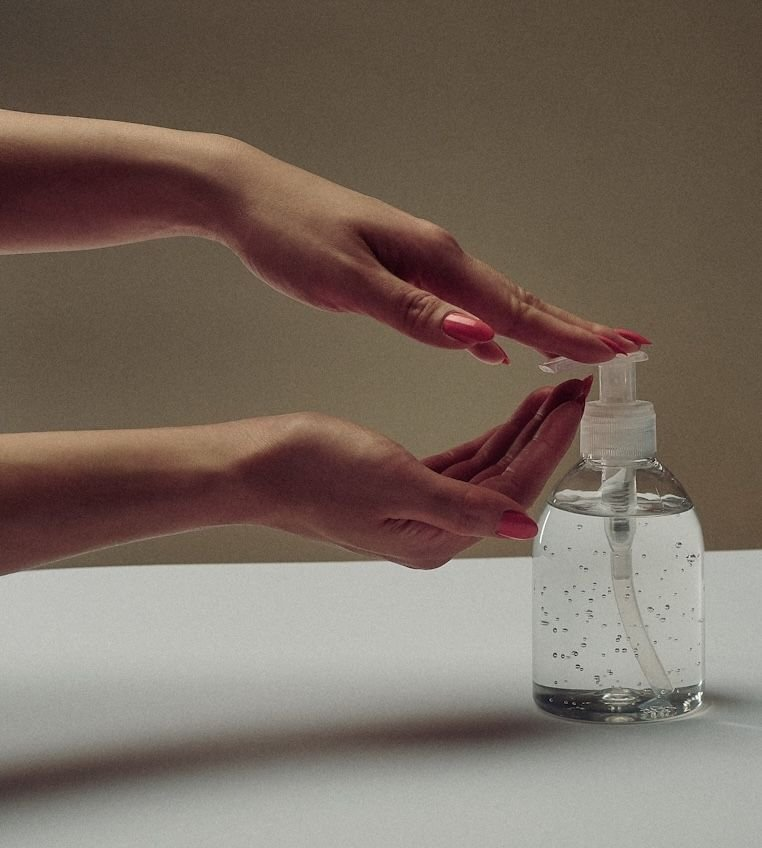

Cleanse Smarter, Not Harder: Choosing Your Perfect Facial Cleanser

Hadiyah Daché, licensed cosmetologist & esthetician
Skin Care Routines
4 min
← All articlesThe Book →Friendly reminder: this post contains affiliate links, which help support the Glowdega Archive. If you buy through them, I may earn a commission at no extra cost to you.
Originally published in 2017, updated March 2025.
No matter what your skin care goals are, everyone has to start with a clean face. Finding the perfect facial cleanser isn't about following trends or marketing—it's about understanding your specific skin conditions and addressing them effectively.
A face cleanser is not a one-size-fits-all product, and using the wrong type can actually worsen your skin concerns. The best facial cleanser should effectively remove dirt and excess oil while being gentle enough to avoid irritation and not dry out your skin. While many people categorize their skin as simply dry, oily, combination, or normal, focusing on specific skin conditions can lead to better results. Let's explore how to choose the right facial cleanser based on various skin conditions.
For Dehydrated Skin
Dehydrated skin lacks water (different from dry skin, which lacks oil) and requires ingredients that attract and retain moisture.
Best Cleansers for Dehydrated Skin:
Look for hydrating cleansers with natural moisturizing factors. Our Calming Cleanse is the perfect gentle, hydrating cleanser for those who prefer more gel-based cleansers.
Consider cream or oil-based cleansers with ingredients like glycerin, grapeseed oil, or chia seed oil. Our Anointed Cleansing Oil has a combination of the two hydrating oils that help remove dirt and oils without stripping your barrier.
Avoid foaming cleansers and harsh surfactants that might strip your skin barrier (like Dial antibacterial soap).
How to Use: Apply to dry skin first, then add water to emulsify. Rinse thoroughly and follow with a hydrating toner and moisturizer to lock in moisture.
For Acne-Prone Skin
Acne occurs when pores become clogged with excess oil, dead skin cells, and bacteria. The right cleanser can help manage this condition.
Best Cleansers for Acne-Prone Skin:
Gel or foam cleansers with mandelic acid, sulfur, salicylic acid or benzoyl peroxide
Clay-based cleansers for excessive oiliness with active breakouts
Oil-free, non-comedogenic formulations
If combating breakouts or cystic acne is your main concern, we suggest mandelic acid or benzoyl peroxide washes as your go-to for gently exfoliating and deeply cleansing any acne-causing bacteria. If your skin can’t tolerate these or the acne is causing your skin to be more sensitive than normal, then the sulfur-based washes will do the trick.
How to Use: Create a rich lather and wash using gentle circular motions. Don't scrub aggressively as this can irritate acne and make it worse. Rinse thoroughly with lukewarm water. You can also use a warm washcloth to remove any excess. With these exfoliating washes, it is common to find more dead skin on your removal.
For Sensitive and Reactive Skin
Sensitive skin becomes easily irritated and may experience redness, burning, or itching when using certain products.
Best Cleansers for Sensitive Skin:
Fragrance-free, hypoallergenic formulas
Cream cleansers with soothing ingredients like aloe or chamomile
Gentle enzyme cleansers for exfoliation
Antioxidant-rich, fragrance-free cleansers are popular among those with sensitive, fussy skin due to their ability to cleanse while soothing inflammation. The pH-balanced formulas containing soothing aloe are great for those who suffer from facial eczema or psoriasis. Sensitive skin also tends to be more reactive to exfoliants but you can use gentle enzyme powders instead. The Epicutis Exfoliating Powder is a great one to try!
How to Use: Test new products on a small area first. Use lukewarm (never hot) water and pat—don't rub—your face dry with a clean towel.
For Hyperpigmentation and Uneven Skin Tone
Hyperpigmentation appears as darker patches on the skin and can result from sun damage, hormonal changes, or post-inflammatory marks.
Best Cleansers for Hyperpigmentation:
Cleansers with brightening ingredients like vitamin C or niacinamide
Gentle exfoliating cleansers with glycolic or lactic acid
Products free of harsh chemicals that can worsen discoloration
Cleansers that blend deeply hydrating ingredients with potent brightening agents effectively cleanse impurities while simultaneously replenishing moisture and rejuvenating the skin's appearance.
How to Use: Use morning and night, following with serums containing targeted brightening ingredients and always applying sunscreen during the day to prevent further hyperpigmentation.
For Oily Skin with Large Pores
Oily skin produces excess sebum, which can lead to enlarged pores and a shiny complexion.
Best Cleansers for Oily Skin:
Foaming or gel cleansers that remove excess oil
Products with salicylic acid to penetrate and clear pores
Clay-based cleansers that absorb oil
A foaming cleanser is more suitable for oily skin to help remove sebum and debris. People with oily skin often experience acne breakouts, enlarged pores, blackheads, and unwanted shine.
How to Use: Cleanse twice daily, using a gentle face cloth to remove the cleanser for light exfoliation. Follow with an oil-free moisturizer, as skipping moisturizer can actually trigger more oil production.
Best Practices for Facial Cleansing (All Skin Conditions)
No matter your specific skin condition, follow these universal best practices:
Wash your hands before washing your face to avoid transferring bacteria.
Use lukewarm water, as hot water strips natural oils and cold water doesn't remove dirt effectively.
Be gentle with your skin—no aggressive scrubbing.
Pat (don't rub) dry with a clean, soft towel.
Apply moisturizer while your skin is still slightly damp to lock in hydration.
Follow with targeted treatments specific to your skin condition.
A Note on pH Balance
The normal pH of our skin is typically between 4.5-5.5, and using a cleanser with a similar pH helps maintain your skin's natural protective barrier. Most bar soaps have a much higher pH (around 8.5-10), which can disrupt your skin's balance and exacerbate conditions like acne, dryness, and sensitivity.
The Simplified Approach
The skincare world is moving away from complicated multi-step routines. There's a growing desire for simplicity, with people becoming more selective in the products they use, picking items that address their specific needs long-term instead of just buying into the latest fad.
For most skin conditions, you need only four essential steps:
Cleanse with the right facial cleanser for your condition
Apply a targeted treatment serum
Moisturize appropriately
Protect with SPF during the day